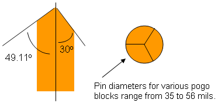

Pogo pin with knife edge tip
The tip of the pogo pin features three contacting edges at a 49.11-degree angle with the pin center line.
Each pair of contacting edges encloses a 30-degree concave section. Thus the edges of the pin tip contact at three points. This provides a highly reliable contact in a nominal 26 mil finished hole size (FHS) pogo via.
The figure shows the angles of the pogo pin tip:

Functional changes
- Introduced before SmarTest 6.3.2